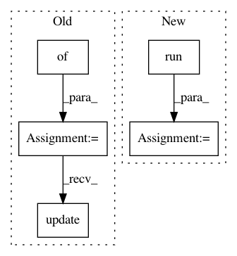

212681dee8efa1ddfdcf6f31dbb590f739d107d8,agents/a3c.py,A3CThread,run,#A3CThread#,370
Before Change
self.r: np.asarray(batch_r)
})
n_states = states.shape[0]
feed_dict = {
// self.master.reward: sum(trajectory.rewards),
// self.master.episode_length: trajectory.steps
}
losses = zip(self.master.losses, map(lambda x: x / n_states, results))
feed_dict.update(losses)
summary = sess.run([self.master.summary_op], feed_dict)
self.writer.add_summary(summary[0], results[-1])
self.writer.flush()
t += 1
After Change
feature = trajectory.features[0]
if isinstance(self, A3CDiscreteCNNRNN):
feed_dict[self.ac_net.rnn_state_in] = feature
results = sess.run(fetches, feed_dict)
n_states = states.shape[0]
feed_dict = dict(zip(self.master.losses, map(lambda x: x / n_states, results)))
summary = sess.run([self.master.summary_op], feed_dict)
self.writer.add_summary(summary[0], results[-1])
In pattern: SUPERPATTERN
Frequency: 3
Non-data size: 5
Instances
Project Name: arnomoonens/yarll
Commit Name: 212681dee8efa1ddfdcf6f31dbb590f739d107d8
Time: 2017-11-03
Author: x-006@hotmail.com
File Name: agents/a3c.py
Class Name: A3CThread
Method Name: run
Project Name: rail-berkeley/softlearning
Commit Name: a41f2ff4c1437f0b61e76265c31bdec71be0556f
Time: 2019-04-26
Author: hartikainen@berkeley.edu
File Name: softlearning/algorithms/sql.py
Class Name: SQL
Method Name: get_diagnostics
Project Name: rail-berkeley/softlearning
Commit Name: a41f2ff4c1437f0b61e76265c31bdec71be0556f
Time: 2019-04-26
Author: hartikainen@berkeley.edu
File Name: softlearning/algorithms/sac.py
Class Name: SAC
Method Name: get_diagnostics